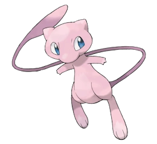

Tipo:
Psíquico
Descripción:
Mew es una criatura tan esquiva que muchos dudan de su existencia, aunque quienes han logrado verlo aseguran que desprende una energía pura y casi infantil. Su cuerpo ligero le permite flotar con movimientos suaves, como si el aire mismo lo sostuviera, y suele jugar entre destellos rosados que deja a su paso. Se dice que posee el material genético de todos los Pokémon, lo que le otorga una versatilidad extraordinaria y una afinidad natural con cualquier tipo de técnica. A pesar de su poder inmenso, rara vez muestra agresividad: prefiere observar desde la distancia, curiosa y tranquila, como si entendiera más del mundo de lo que deja ver. Cuando decide revelar su presencia, lo hace con una gracia casi mágica, irradiando una calidez que inspira confianza incluso en los corazones más temerosos.
Evoluciones & Prevoluciones
Ninguna